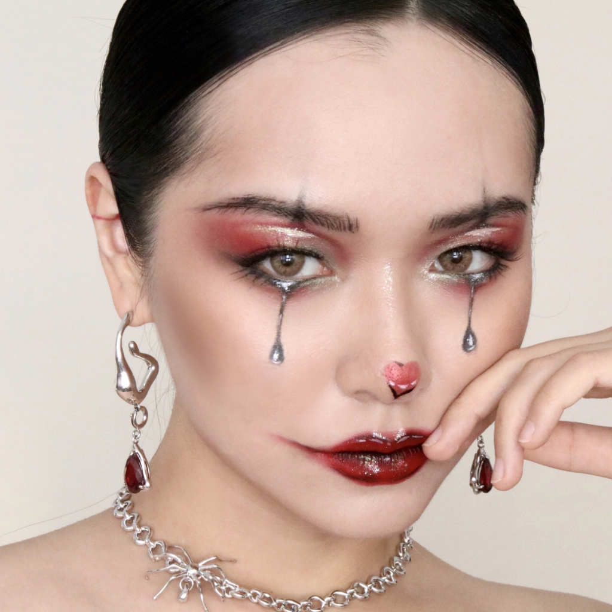
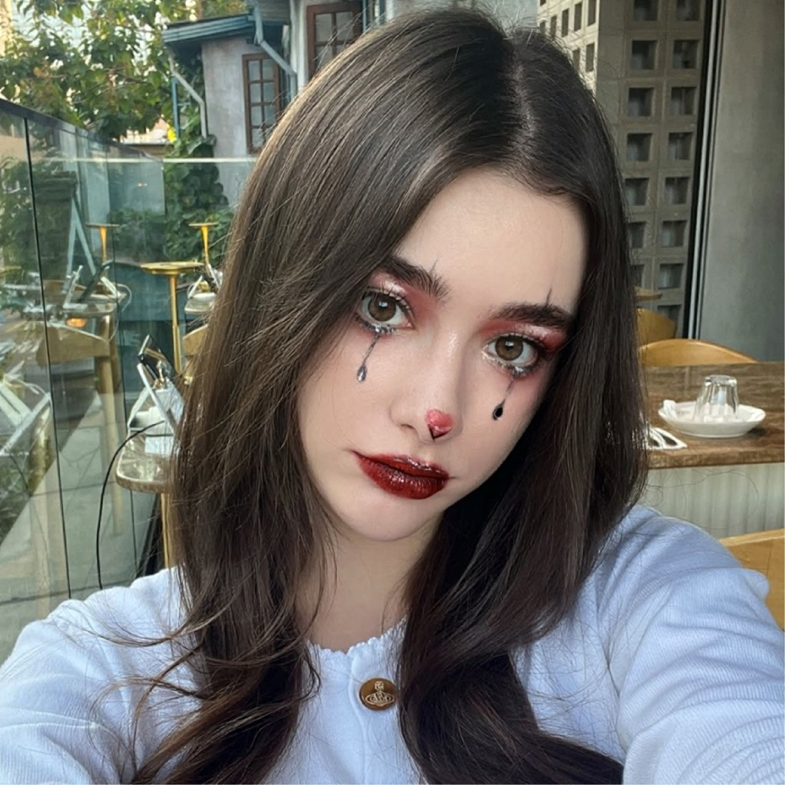
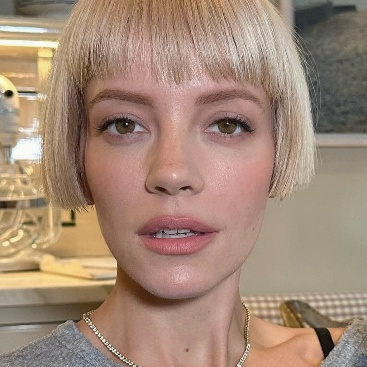
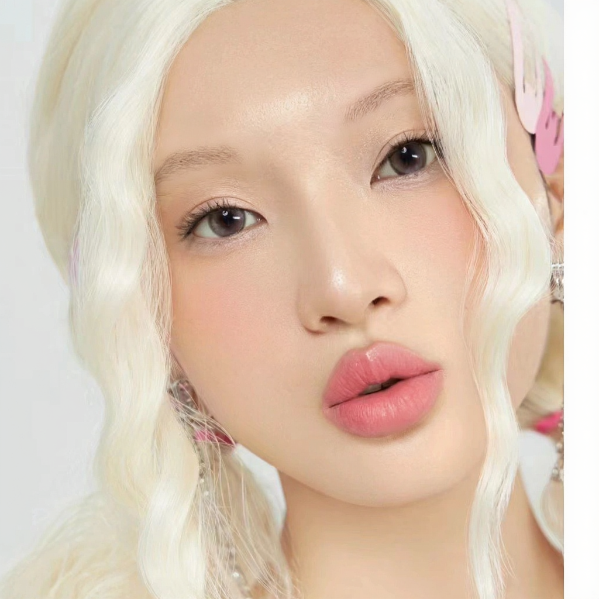
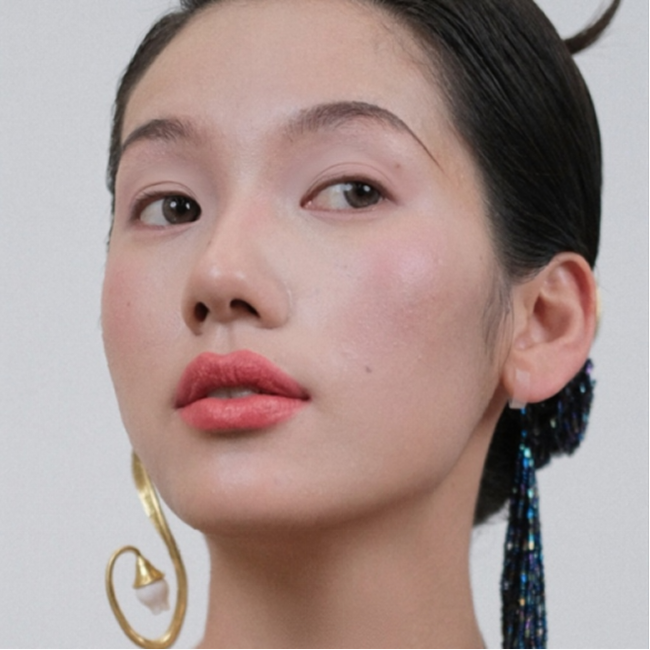

MagicMakeup transfers full-face and regional makeup while preserving source identity, facial geometry, and non-edited regions.

Pixel masks are aligned with attention tokens, then region-specific logit gating blocks cross-region leakage.
Text and image features are aligned to clarify which attributes should be transferred and which identity cues should be preserved.
The benchmark covers synthetic and real 1024 x 1024 makeup-transfer settings with region-level evaluation.













MagicMakeup combines token-aligned spatial constraints with transfer/preservation disentanglement and a makeup-removal data pipeline.


@inproceedings{wang2026magicmakeup,
title = {MagicMakeup: A Region-Controllable Diffusion Transformer for High-Fidelity Makeup-Transfer},
author = {Wang, Ziyi and Zheng, Siming and Yang, Yang and Xu, Shusong and Zhang, Hao and Li, Bo and Zou, Changqing and Jiang, Peng-Tao},
booktitle = {European Conference on Computer Vision},
year = {2026}
}